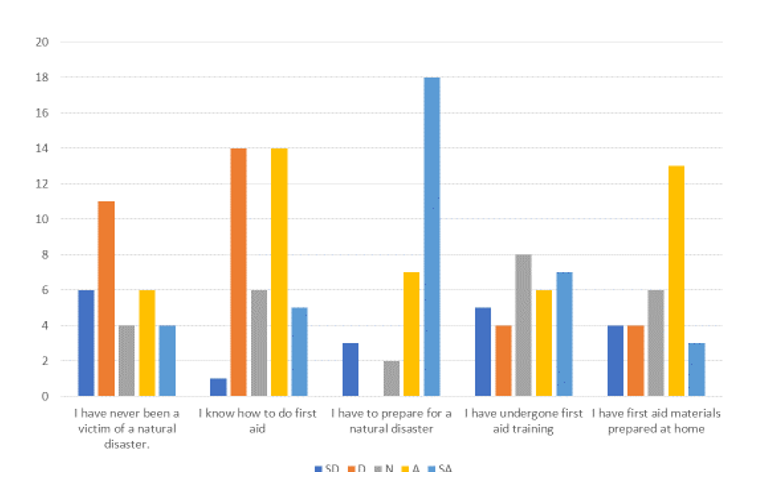
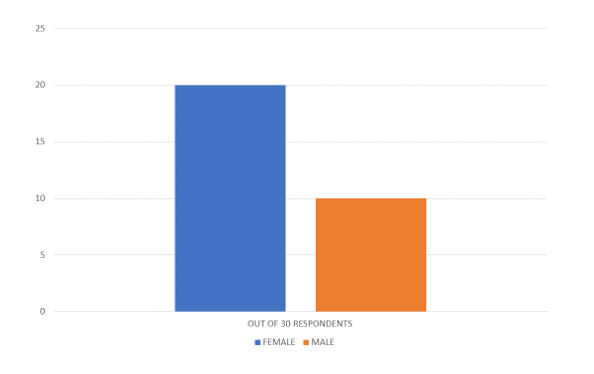
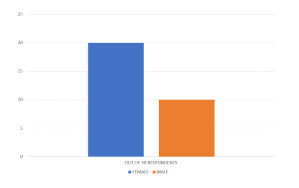

About Our Study
Philippines is one of the most prone to disasters. Ranking in 2nd place behind USA, we naturally experience disasters year-round. As a Filipino citizen, we either experience floods, thunderstorms and droughts on a seasonal basis. This is why it is common for Filipinos to naturally adapt to natural disasters. In our study, we've conducted a survey within North Olympus to determine the behaviors of adults towards said disasters. The results will be discussed in the following sections.

Attitudes of Heads of Families Towards Disaster Preparedness
Abstract
A survey was conducted to thirty respondents about their knowledge in first aid and their awareness when it comes to disasters. This research is conducted to know how many heads of families are ready when it comes to natural or manmade disasters. The location of this study is in North Olympus, and the result shows if people who lives in North Olympus are for disasters.
As a head of a family is it your responsibility to be aware and to be ready incase of emergencies or disasters? The answers will be on the result of this research. Our country is known for its severe natural and manmade disasters and because of those disasters, damages, deaths and injuries are very common. With this study, We will know if people, specifically heads of house are ready for disasters.

Introduction
What is disaster? Why do we have to prepare for disasters? Disaster is a sudden event, such as accident or a natural catastrophe, that causes great damage or loss of life. We have to prepare so that there will be less damage to the people and the place. Without prevention, it can cause great damage to the economy of the country and loss of life, injuries and damage to the environment.
Our country, the Philippines, is currently promoting disaster preparedness not only to adults but also to the youth. Subjects like DRRR (Disaster Readiness and Risk Reduction) is highly encouraged by DepEd for students to be prepared for disasters and to help keep the hazard under control which leads to the prevention of disasters.

Statement of the Problem
This study’s purpose is to examine and study the preparedness of the heads of house who lives in North Olympus Subd. through surveys, we aim to give you knowledge about the readiness of people regarding first aid and disaster preparedness.

Scope and Delimitation of the Study
This study focusses on the preparedness of each head of families who lives in North Olympus. There is a total of 30 respondents all are heads of house. 20 of them are female while the other 10 are male. We distributed the 30 surveys to each member of our group and then lets people that we know answer them. Some did not agree to answer the survey, and some answered it with difficulties. Based on the data, most of the people that agreed to answer the survey are female. Some male agreed to answer after much persuasion while some said that they’re too busy to answer the survey. While the female respondents are mostly housewives, others are employees.

Review of Related Literature
The study is about disaster preparedness from the heads of house who lives in North Olympus. Studying about disasters and hazards is very common, especially in this country, the Philippines. The country belongs in the ‘Pacific ring of fire’ where volcanic eruptions is very common. Things like earthquake, storms, flashfloods, landslide, etc. always happen, that’s why disasters, hazards and emergencies always happen. Now in our locale of study, North Olympus is a fairly peaceful subdivision, but the question that pops up in our minds is “Are people who live in North Olympus prepared?”. How would you define a community? Based on a journal that is related to disaster preparedness, A community is diverse with different people with different way of thinking and different ways of planning, that’s why a community prosper when people work together (Cuervo, Leopeld and Baron, 2017, Supplement 2, Vol 107, No. S2)
Based on the journal, with diverse people around a community it’s more likely that the community will benefit. Different types of intellect and ideas merge and gives a greater chance when it comes to preparedness and `survival for the community. In a united community everyone will benefit no doubt about it.
Talking about disaster preparedness, we, as a community should also think of the vulnerable people we have in this party. A country with an aging population like Australia have that exact problem when it comes to preparedness of the vulnerable people. Australia is filled with vulnerable people like the senior citizens, ill people and people with mental instability which leads us to the question, ‘how can vulnerable people prepare for disasters?’ well a researcher made an effort to answer that question. Due to Australia’s aging population they now have a problem for vulnerable people like the senior citizens, patients with disability, etc. they don’t have the ability to prepare for natural disasters and for hazards around them. The study’s conclusion does not give a specific solution for this problem, but Australia plans to be more aware and aim to improve disaster resilience among vulnerable groups by working together and by using the software for it’s stored data about the people who are more at risk when it comes to disasters.
In a community, a family is very important. But is the family prepared for disaster preparedness? Based on a journal, A couple are more prepared when it comes to planning category than a single headed household but other categories like having supplies, upgraded skills and protection are a single headed household’s advantage. At this study they used the Chi square analysis where they compare two subjects: a single-headed household and the couple-headed household.
It seems like having a team unit when it comes to disaster preparedness is a better choice. Specifically having at least 2 or more members in a family is ideal for disaster preparedness planning. Compare to having only a single member family which have the lowest rate when it comes to having a plan for disasters (Kirschenbaum).
In this world that we’re living in, people have their own beliefs and faith. And some just don’t agree with others and because of this, misunderstanding happens. Terrorist attacks are now frequent and more dangerous (Whitehurst, 2006)
Due to terrorist threats and other phenomenon people are now more aware about disaster preparedness. People learn through their past mistakes and are now better prepared. The community is now aware what they can do to lessen damage from those disasters.
With all the chaos that has been happening in our world, it’s no wonder why so many people are so traumatized, depressed and in a state of anxiety. All of those effects are of course signs if distress. With an unbalanced mindset there is now more room for different types of accidents, hazards and disaster that could happen. Without a clear mind most people would just panic and would be in a state of total mayhem. When it comes to disaster preparedness one should not panic and be clueless. A person should think about what will possibly happen in a disaster and how to lessen the damage (Mishra and Suar, 2011)

Methodology
Research Design
This study’s purpose is to examine and study the preparedness of the heads of house who lives in North Olympus Subd. through surveys, we aim to give you knowledge about the readiness of people regarding first aid and disaster preparedness.
Research Instruments
This study’s purpose is to examine and study the preparedness of the heads of house who lives in North Olympus Subd. through surveys, we aim to give you knowledge about the readiness of people regarding first aid and disaster preparedness.
Locale of the Study
This study’s purpose is to examine and study the preparedness of the heads of house who lives in North Olympus Subd. through surveys, we aim to give you knowledge about the readiness of people regarding first aid and disaster preparedness.
Population of the Study
This study’s purpose is to examine and study the preparedness of the heads of house who lives in North Olympus Subd. through surveys, we aim to give you knowledge about the readiness of people regarding first aid and disaster preparedness.
Stages in Research and Design

Results

 

Analysis of the Data
Based on the results of our survey, it can be clearly seen that the residents of North Olympus take natural disasters seriously. Most have experiences with natural disasters, whether it’s an extreme disaster or not is not known. Most also show basic knowledge in first aid and believe themselves to be capable on acting on the situation when it comes to it. They are updated on the natural disasters that could happen at any time and believe themselves to be prepared. Whether they know how capable their family is, that knowledge is up to them.
Discussion
It can be safely said from the results that adults, especially Filipino adults who lives in North Olympus, take disasters seriously and have some basic disaster and first aid knowledge.
Conclusion
Despite their belief that they are prepared and have sufficient knowledge in first aid, this has not been proven with a real-life situation simulation. Their opinions of themselves differ in reality to how they actually react in real life but knowing that they are confident in their capabilities is a plus side.
And so, to conclude, residents of the North Olympus community are confident in their abilities to react during dire situations like disasters. Some are not confident with their skills when it comes to planning and keeping up on local news about disasters.
Bibliography
Menard, A., Wilderness First Aid Basics: A Guide for Preparation, Basic First Aid and Survival (2016), Source: (https://www.acls.net/2016/02/17/wilderness-first-aid-basics/)
Philippine Red Cross conducts free first aid training on World First Aid Day, Source: (http://pia.gov.ph/news/articles/1000267)
Alhejaili AS, Alsubhi SA (2016) Knowledge and Attitude of Skills among Health Science Students at Taibah University, Source: (http://www.naspeinfo.org/why-is-it important-to-have-first-aid-knowledge-and-skills/)
Family Perspectives on Emergency/Disaster Preparedness, EP Magazine (July 2015) Source: eparent.com
Kirschenbaum, A., Families and Disaster Behavior: A Reassessment of Family Preparedness
Cuervo, I. & Baron, S., AJPH Supplement 2(2017)
The Importance of Learning First Aid (2017)
Disaster Preparedness: Need for inclusion in undergraduate nursing education (Achora, S. and Kamanyire, J.K., Sultan Qaboos University Medical Journal, 2016) © Copyright 2016, Sultan Qaboos University Medical Journal, All Rights Reserved
Source: (https://www.ncbi.nlm.nih.gov/pmc/articles/PMC4746037/#!po=68.6047)
Opportunities for general practitioners to enhance disaster preparedness among vulnerable patients (Anikeeva, O., Cornell, V., Steenkamp, M. and Arbon, P., Australian Journal of Primary Health,2016) Source: (http://dx.doi.org/10.1071/PY15156)
(Paganini, M., Scandinavian Journal of Trauma, Resuscitation and Emergency Medicine, 2016) © The Author(s). 2016 Sources: (https://doi.org/10.1186/s13049-016-0292-6, https://sjtrem.biomedcentral.com/articles/10.1186/s13049-016-0292-6)